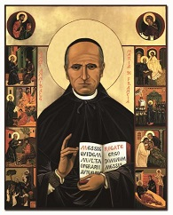

Familia Rogacionista
-

-
San Anibal Maria Di Francia (1851-1927)
Biografía
Aníbal María Di Francia nació en Messina el 5 de julio de 1851 de la noble señora Anna Toscano y del caballero Francisco, marqués de S. Caterina dello Ionio, Vicecónsul Pontificio y Capitán Honorario de la Marina. Tercero de cuatro hijos, Aníbal quedó huérfano, tan sólo a los quince meses por la muerte prematura del padre. Esta amarga experiencia infundió en su ánimo la particular ternura y el especial amor a los huérfanos, que caracterizó su vida y su sistema educativo. Desarrolló un grande amor hacia la Eucaristía, tanto que recibió el permiso, excepcional para aquellos tiempos, de acercarse cotidianamente a la Santa Comunión. Jovencísimo, delante del Santísimo Sacramento solemnemente expuesto, recibió lo que se puede definir «inteligencia del Rogate»: es decir, descubrió la necesidad de la oración por las vocaciones, que, más tarde, encontró expresada en el versículo del Evangelio: «La mies es mucha pero los obreros son pocos. Rogad (Rogate) pues al dueño de la mies, para que envíe obreros a su mies» (Mt 9, 38: Lc 10, 2). Estas palabras del Evangelio constituyeron la intuición fundamental a la que dedicó toda su existencia. De ingenio alegre y de notables capacidades literarias, apenas sintió la llamada del Señor, respondió generosamente, adaptando estos talentos a su ministerio. Terminados los estudios, el 16 de marzo de 1878 fue ordenado sacerdote. Algún mes antes, un encuentro «providencial» con un mendigo casi ciego lo puso en contacto con la triste realidad social y moral del barrio periférico más pobre de Messina, las llamadas Casas de Avignone y le abrió el camino de aquel ilimitado amor hacia los pobres y los huérfanos, que llegará a ser una característica fundamental de su vida. Con el consentimiento de su Obispo, fue a habitar en aquel «gueto» y se comprometió con todas sus fuerzas en la redención de aquellos infelices, que, se presentaban, ante su vista, según la imagen evangélica, como «ovejas sin pastor». Fue una experiencia marcada por fuertes incomprensiones, dificultades y hostilidades de todo tipo, que él superó con grande fe, viendo en los humildes y marginados al mismo Jesucristo y realizando lo que definía: «Espíritu de doble caridad: la evangelización y la ayuda a los pobres». En 1882 dio inicio a sus orfanatos, que fueron llamados antonianos porque puestos bajo la protección de San Antonio de Padua. Su preocupación no sólo fue la de dar pan y trabajo, sino y, sobre todo, la de educar de forma integral a la persona teniendo en cuenta el aspecto moral y religioso, ofreciendo a los asistidos un verdadero clima de familia, que favorece el proceso formativo para hacerles descubrir y seguir el proyecto de Dios. Hubiera querido abrazar a los huérfanos y a los pobres de todo el mundo con espíritu misionero. Pero, cómo hacerlo? La palabra del Rogate le abría esta posibilidad. Por eso escribió: « ¿Qué son estos pocos huérfanos que se salvan y estos pocos pobres que se evangelizan frente a millones que se pierden y están abandonados como rebaño sin pastor?... Buscaba un camino de salida y lo encontré amplio, inmenso en aquellas adorables palabras de nuestro Señor Jesucristo: Rogate ergo... Entonces me pareció haber hallado el secreto de todas las obras buenas y de la salvación de todas las almas». Aníbal había intuido que el Rogate no era una simple recomendación del Señor, sino un mandado explícito y un «remedio inefable». Motivo por el cual su carisma es de valorar como el principio animador de una fundación providencial en la Iglesia. Otro aspecto importante para hacer resaltar es que él precede a los tiempos en el considerar vocaciones también aquellas de los laicos comprometidos: padres, maestros y hasta buenos gobernantes. Para realizar en la Iglesia y en el mundo sus ideales apostólicos, fundó dos nuevas familias religiosas: en 1887 la Congregación de las Hijas del Divino Celo y diez años después la Congregación de los Rogacionistas. Quiso que los miembros de los dos Institutos, aprobados canónicamente el 6 de agosto de 1926, se comprometieran a vivir el Rogate con un cuarto voto. Tanto que el Di Francia escribió en una súplica del 1909 a S. Pío X: «Me he dedicado desde mi primera juventud a aquella santa Palabra del Evangelio: Rogate ergo. En mis mínimos Institutos de beneficencia se eleva una oración incesante, cotidiana de los huérfanos, de los pobres, de los sacerdotes, de las sagradas vírgenes, con la que se suplican a los Corazones Santísimos de Jesús y María, al Patriarca S. José y a los Santos Apóstoles para que quieran proveer abundantemente a la Iglesia de sacerdotes elegidos y santos, de obreros evangélicos de la mística mies de las almas». Para difundir la oración por las vocaciones promovió numerosas iniciativas, tuvo contactos epistolares y personales con los Sumos Pontífices de su tiempo; instituyó la Sagrada Alianza para el clero y la Pía Unión de la Rogación Evangélica para todos los fieles. Creó el periódico con el significativo título «Dios y el Prójimo» para implicar a los fieles a vivir los mismos ideales. «Es toda la Iglesia — escribe él — que oficialmente tiene que rezar por este fin, ya que la misión de la oración para obtener buenos obreros es tal que ha de interesar vivamente a cada fiel, a todo cristiano, que le preocupe el bien de todas las almas, pero en particular a los obispos, los pastores del místico rebaño, a los cuales fueron confiadas las almas y que son los apóstoles vivientes de Jesucristo». La anual Jornada Mundial de Oración por las Vocaciones, instituida por Pablo VI en 1964, puede considerarse la respuesta de la Iglesia a esta intuición suya. Grande fue el amor que tuvo por el sacerdocio, convencido que sólo mediante la obra de los sacerdotes numerosos y santos es posible salvar a la humanidad. Se comprometió fuertemente en la formación espiritual de los seminaristas, que el arzobispo de Messina confió a sus cuidados. A menudo repetía que sin una sólida formación espiritual, sin oración, «todos los esfuerzos de los obispos y de los rectores de los seminarios se reducen generalmente a una cultura artificial de sacerdotes...». Fue él mismo, el primero, en ser buen obrero del Evangelio y sacerdote según el corazón de Dios. Su caridad, definida «sin cálculos y sin límites», se manifestó con connotaciones particulares también hacia los sacerdotes en dificultad y las monjas de clausura. Ya durante su existencia terrenal fue acompañado por una clara y genuina fama de santidad, difundida a todos los niveles, tanto que cuando el 1 de junio de 1927 falleció en Messina, confortado por la presencia de María Santísima, que tanto había amado durante su vida terrenal, la gente decía: «Vamos a ver el santo que duerme». Los funerales fueron una verdadera y propia apoteosis, que los periódicos de la época puntualmente registraron con artículos y con fotografías. Las autoridades fueron solícitas en otorgar el permiso de enterrarlo en el Templo de la Rogación Evangélica, que él mismo había querido y que está dedicado precisamente al «divino mandato»: «Rogad al Dueño de la mies para que envíe obreros a su mies». Las Congregaciones religiosas fundadas por el Padre Aníbal están hoy presentes en los cinco Continentes comprometidas, según los ideales del Fundador, en la difusión de la oración por las vocaciones a través de centros vocacionales y editoriales y en la actividad de los institutos educativos asistenciales a favor de niños y muchachos necesitados y de sordomudos, centros nutricionales y de salud; casas para ancianos y para madres solteras; escuelas, centros de formación profesional, etc. La santidad y la misión de Padre Aníbal, declarado «insigne apóstol de la oración por las vocaciones», son hoy profundamente apreciadas por quienes se han compenetrado de las necesidades vocacionales de la Iglesia. El Sumo Pontífice, Juan Pablo II, el 7 de octubre de 1990 proclamó al Di Francia Beato y al día siguiente lo definió: «Auténtico precursor y celoso maestro de la moderna pastoral vocacional».